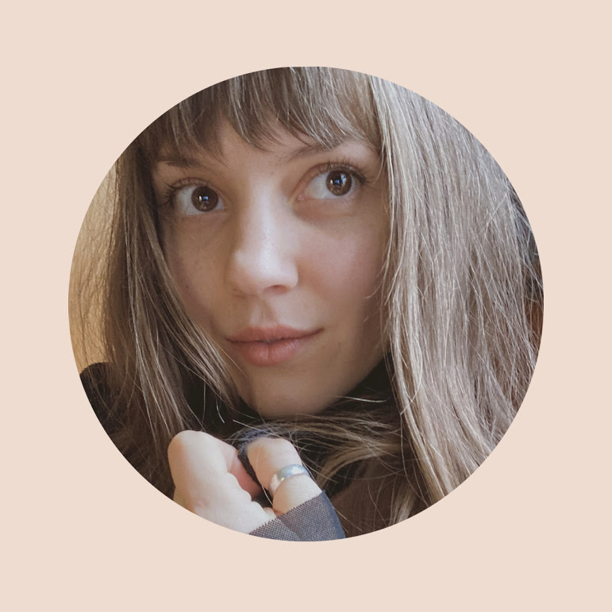
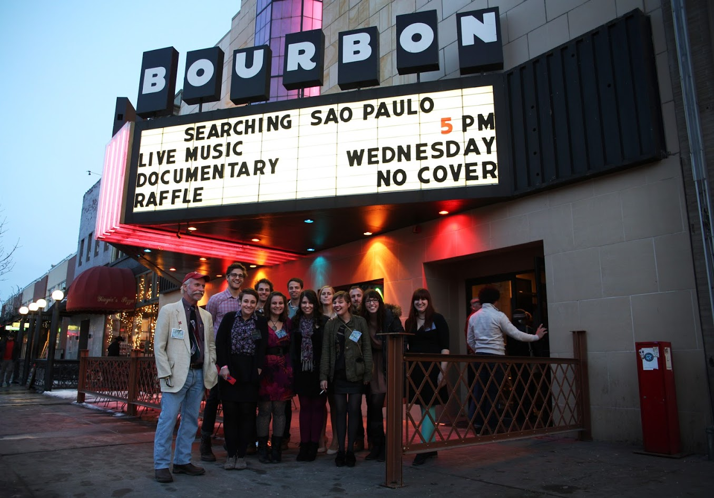
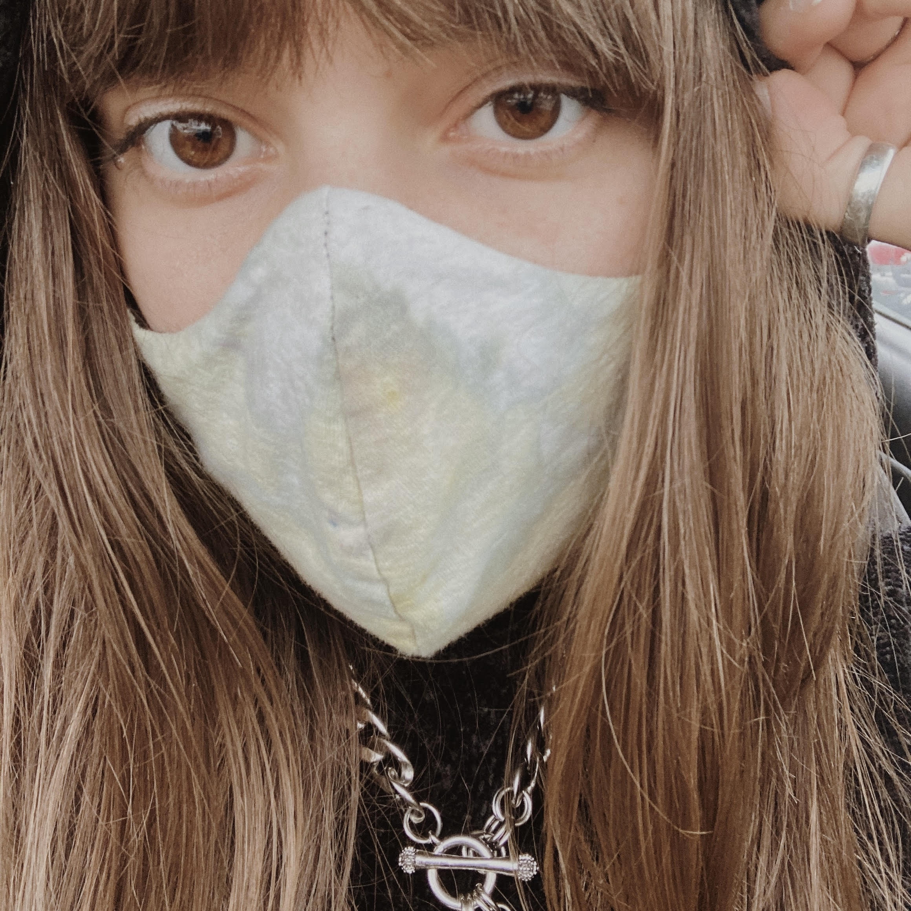

Meet Kat Ruth

You found me. I'm so glad.
Thank you for taking the time to check out my portfolio — I have worn many hats professionally and creating a place to display my projects and interests has been a fun challenge.
My name is Kat Ruth, I am a 26-year-old creative living between Kansas City, MO and Nashville, TN. As a youth, I was solely focused on journalism and rose in rank to become the co-editor of my high school newspaper my senior year, winning a few national awards along the way. I attended journalism school for a year at the University of Nebraska-Lincoln, and was very involved in their photojournalism program — my first semester I even received a grant to go on a documentary photography trip to São Paulo, Brazil.

After a year of school and working multiple jobs in journalism (staff photographer, multimedia intern for a music journalism site Hear Nebraska), I wanted to try something new. I entered fields like wine cellar work, restaurant serving, event catering — things that taught me many new interpersonal and organizational skills that I use every day.

In late 2014 I founded a now-defunct web design company with a partner who handled the SEO and advertising side of things. I used my knowledge of Drupal, WordPress and Adobe Muse to make websites for clients, mostly hiring out for backend work.
Over time our projects became scarce and eventually fizzled out as we both changed jobs and moved cities; I continue to take freelance multimedia gigs but have since let my web design skills become outdated. I recently enrolled in KU Coding Bootcamp to reimmerse myself in the world wide web and its design and functions.
This portfolio currently showcases recent photography and Illustrator work, but will soon be filled with deployed web applications and beautiful UX/UI projects!